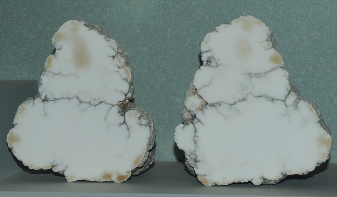

|

| Ca2B5SiO9(OH)5
This sample of howlite is displayed in the Smithsonian Museum of Natural History. Howlite is a silicate mineral of boron and calcium with the composition Ca2B5SiO9(OH)5. Mindat also classifies it as a borite or a borosilicate. The samples at left are each about 10 cm across and are from Tick Canyon, California.
|